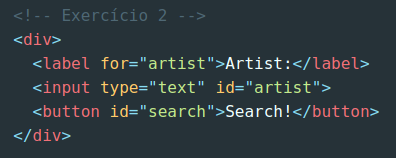
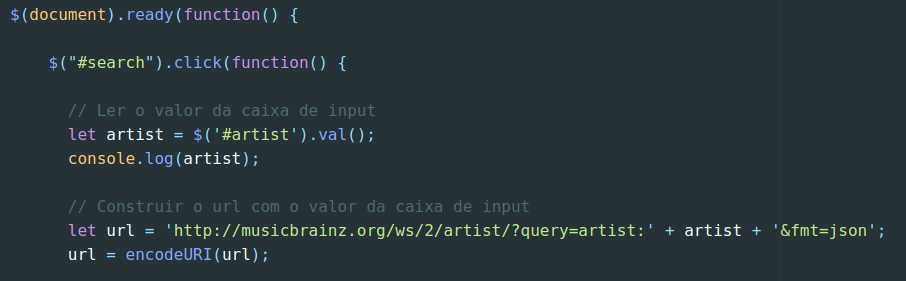
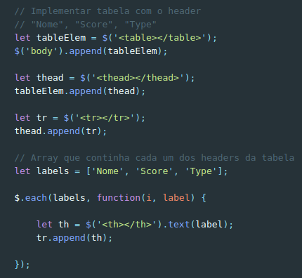
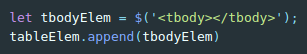
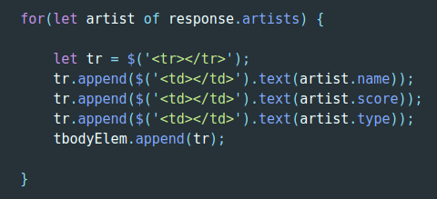
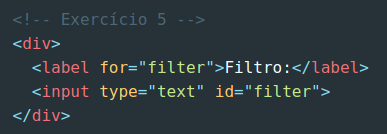
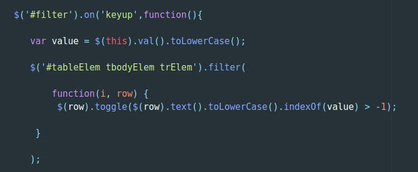

Resolução e análise à ficha de trabalho nº 5
Documento pdf associado: Ficha de trabalho nº 5
Esta ficha de trabalho em particular possui uma importância termenda no aplicação
da ideia para o catálogo de música pedido no projeto de grupo. Esta ficha de trabalho
ensina a utilizar a técnica AJAX de modo a obter uma pesquisa personalizada e filtrada
utilizando para isso a API do website "MusicBrainz".
Destaques a salientar:
- A implementação da técnica AJAX na ficha de trabalho foi conseguida
com auxílio da biblioteca JavaScript jQuery;
- A ficha de trabalho foi divida entre dois documentos distintos, mas associados. Um tratava-se
do documento HTML onde a funcionalidade "estática" de pesquisa viria a ser implementada. O outro
era um documento exterior JavaScript que continha todo o código jQuery utilizado para lograr a
técnica AJAX;
- Tal como na ficha de trabalho nº 4, a documentação online
da biblioteca jQuery poderia ser consultada;
- Por fim, tal como nas restantes fichas de trabalho, o Sistema de Controlo de Versões Git deveria
ser utilizado em cada alínea da ficha, sendo desenvolvidas diferentes branches em cada uma destas. No final
deveria ser feito merge de todo o projeto na branch master.
Exercício 1: Inicie um novo repositório e faça o versionamento inicial:
Resolução:
Procedi ao versionamento inicial da ficha de trabalho da forma que me foi ensinada ao longo
da cadeira e já utilizada por mim entretanto, utilizando os seguintes comandos, por ordem:
- $ git init
- $ git config user.name "Paulo Cunha"
- $ git config user.email "paulo_cunha1997@outlook.pt"
- $ git add .
- $ git commit -m "Commit inicial na ficha de trabalho nº 5"
- Iniciei o versionamento utilizando o comando "git init", procedendo em seguida à configuração
local do meu nome de utilizador e email. Utilizando o comando "git add ." transformei o estado de todos os ficheiros do diretório
para modified. De seguida, realizei o commit inicial do exercício.
Exercício 2: Escreva uma página que contenha um label, uma caixa de input de texto
e um botão. Estes elementos deverão ser usados para a funcionalidade de pesquisa do artista:
Resolução:
Seguindo atentamente o que havia acabado de ser pedido no enunciado, procedi à estrutura/layout
do documento HTML onde a funcionalidade de pesquisa viria a ser implementada, criando os elementos
dentro de uma "div" respetiva:

- Foi criada em primeiro lugar uma label destinada ao campo do artista, apresentando "Artist"
como seu conteúdo;
- Em segundo lugar foi concebida uma caixa input que iria ser o local onde o artista/banda viria
a ser pesquisa posteriormente. Este input era do tipo "text" e possuía como "id" o valor "artist";
- Por fim, a estrutura HTML foi finalizada com um botão com o atributo id "search"
e "Search!" como conteúdo "interior" do mesmo.
Exercício 3: Com o auxílio de jQuery implemente AJAX para fazer o pedido ao serviço
MusicBrainz.
Resolução:
Procedi ao pedido à API do catálogo "MusicBrainz" da forma que se segue:

- Iniciando o processo com a boa prática que aprendi durante a introdução à biblioteca jQuery, procedi
ao carregamento do documento antes de qualquer codificação;
- Em seguida, e dentro do scope da função utilizada para o carregamento já referido,
procedi à seleção do id "#search", pertencente ao botão implementado no documento HTML. Utilizei uma função
"anónima" associada ao id selecionado, onde:
- Foi lido o valor da caixa de input, definindo uma variável denominada de "artist" e a ela
sendo atribuído o valor presente no id selecionado ("artist"). Isto foi conseguido através
do método "val()". Foi imprimido para o ecrã o artista pesquisado, de modo a confirmar se o pedido
estaria a ser efetuado de forma correta;
- Foi construído o url que possuía o valor relativo à caixa de input, procedendo à criação
de uma variável url, que, concatenando o url original com a variável que continha o artista
desejado, criando um documento em formato JSON no final;
- Foi utilizada a função "encodeURI()", que tem como objetivo transformar em código próprio
os vários caracteres especiais.
Exercício 4: Apresente os resultados numa tabela:
Prosseguindo a ficha de trabalho, foi pedido em seguida que se apresentasse
os resultados do pedido ao serviço MusicBrainz numa tabela própria.


- Primeiramente, tal como na ficha de trabalho nº 4, foi criada uma tabela utilizando o seletor jQuery,
guardando esse valor na variável "tableElem", sendo de seguida adicionado ao body do documento. Um processo
similar foi repetido para o elemento "thead" e "tr", sendo estes adicionados por sua vez ao "tableElem"
e ao "thead", respetivamente;
- Foi, em seguida, criado um array com os valores "Nome", "Score" e "Type", sendo que estes seriam o header
da tabela e foram distribuídos posteriormente pela mesma utilizando o método "$(each)":
- O referido método recebeu como argumentos o array "labels" e uma função, sendo que a função
possuía como parâmetros o índice ("i") do elemento label e o próprio elemento "label";
- Em seguida foi adicionado ao elemento "tr" o elemento "th";
- Finalmente, foi criado o elemento tbodyElem e adicionado ao body.

- Foi utilizado então o iterador de arrays "for... of...",
que iterou sobre cada resposta ao pedido pelo "artist", retornando uma linha (tr), para cada
um destes;
- Utilizando os métodos "append()" e "text()" foram adicionados os td's (table data) e
escrito dentro dos elementos o valores retornados a partir do array "artist" ("name", "score" e "type"),
respetivamente;
- Por fim, e para finalizar o exercício 4, foi adicionado ao elemento "tbodyElem" a linha/tr,
criada anteriormente.
Exercício 5: Implemente uma caixa de filtro de resultados.
Começando por modificar o HTML de modo a conseguir-se implementar a funcionalidade
que permitira filtrar os resultados da pesquisa, criei a seguinte markup, novamente
dentro de um elemento "div":

- Criei uma label que se destinava a ligar-se com o id "filter" e possuia como conteúdo a palavra "Filtro";
- Em seguida procedi à concepção de um input do tipo "text" com o id "filter" já referido, tratando-se
esta da caixa de texto que viria a ser utilizada como filtro da pesquisa implementada anteriormente.

- Explicando o filtro implementado por fases:
- No início é selecionado o elemento do id "filter" e utilizado um método denominado de "on()", de modo
a permitir a escolha de uma tecla a ser pressionada ("keyup"), neste caso, o que permitira filtrar os resultados
utilizando o teclado;
- Continuando no scope da função da tecla "keyup", é criada uma variável denominada de "value", que viria
a conter o valor do "this", isto é, o elemento ao qual se referia, conseguido através do método "val()" e que viria
a ser transformado para minúsculas, utilizando a função "toLowerCase()";
- Em seguida o filtro foi implementado propriamente, selecionando vários elementos relativos à tabela ("tableElem, tbodyElem e tr").
aplicando o método "filter()" em seguida:
- Dentro do método "filter()" foi definida uma função que iria conter como elementos o índice "i" da linha ("row") e a própria
linha, sendo nessa precisa função aplicado um método "toogle()", que após ser selecionada a linha, permitia "esconder" ou "mostrar"
os filtros. Sendo que esta funcionalidade foi conseguida fazendo uso, novamente, do método "toLowerCase()" que, após ser
obtido o elemento textual, transformava para minúsculas os elementos presentes no filtro e seguia uma lógica associada
ao valor presente no índex, lógica que definia que o valor associado teria que ser maior que -1.
Resultado final da ficha de trabalho em questão:
Considerações finais: Como já esperava aquando do começo da resolução desta ficha de trabalho,
confirmei as minhas expetativas quanto à utilidade e conhecimentos passíveis de serem adquiridos durante e após a resolução
da mesma. A implementação da técnica AJAX foi sem dúvida um conceito muito interessante e sobre o qual sempre
tive curiosidade de me "debruçar". Usarei sem dúvida os conhecimentos adquiridos com esta ficha de trabalho tanto
para os meus futuros projectos deste curso como a nível pessoal, implementando tanto os vários métodos de pesquisa e
respetivos filtros, como de modo a fazer pedidos cliente-servidor sempre que esta prática for necessária.